전자기기기능장 (2003-07-02 기출문제)
1과목: 임의구분
1. 그림에서 스위치(S.W)를 닫을 때의 충전전류 i(t)[A]는?
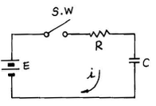
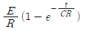
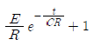
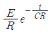
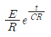
(정답률: 93%)

2. 같은 철심 위에 동일한 권수로 자기 인덕턴스 L[H]의 코일 2개를 접근해 감고, 이것을 직렬로 접속했을 때 합성 인덕턴스는? (단, 결합계수는 1이다.)
- 1L [H]
- 2L [H]
- 4L [H]
- 8L [H]
(정답률: 71%)
3. 유도전동기의 회전력은?
- 단자 전압에 정비례
- 단자 전압의 1/2승에 비례
- 단자 전압의 2승에 비례
- 단자 전압의 3승에 비례
(정답률: 95%)
4. PN 접합에서 접합 용량에 영향을 주지 않는 것은?
- 역방향 전압의 크기
- 접합 면적의 크기
- 역포화 전류의 크기
- 공간전하 영역의 폭
(정답률: 89%)
5. 다음 회로의 정수로 계산되는 적분식으로 옳게 표시된 것은?
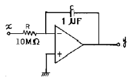
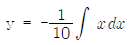
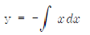
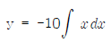
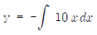
(정답률: 83%)
6. 주파수 변조시스템에서 대역폭은? (단, △f는 최대주파수 편이, fm은 변조 주파수이다.)
- B = (△f+fm)/4
- B = (△f+fm)/2
- B = △f+fm
- B = 2(△f+fm)
(정답률: 95%)
7. 이상적인 OP AMP의 조건은? (단, Ri=증폭기의 입력저항, Ro=출력저항)
- Ri=∞, Ro=0
- Ri=0, Ro=∞
- Ri=∞, Ro=∞
- Ri=0, Ro=0
(정답률: 93%)
8. 모뎀(Modem)이란?
- 위성통신 변조기
- 지구국 복조기
- 무선항로 표시기
- 데이터통신 변ㆍ복조기
(정답률: 93%)
9. 마이크로컴퓨터에서 정보를 전송하는 선(線)은?
- 어드레스 버스
- 데이터 버스
- 제어 버스
- 인터럽트
(정답률: 93%)
10. 2진 논리 대수에서
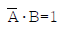
일 때 A 및 B는 각 각 어떤 값인가?- A=0, B=0
- A=0, B=1
- A=1, B=0
- A=1, B=1
(정답률: 82%)
11. 전가산기 논리 회로를 구성하기 위하여 필요한 것은?
- 반가산기 2개
- 반가산기 2개와 OR 1개
- 반가산기 3개
- 반가산기 2개와 AND 1개
(정답률: 89%)
12. 완충 증폭기의 목적은?
- 발진주파수 변동방지
- 송신출력 변동방지
- 찌그러짐 방지
- 불요복사 방지
(정답률: 89%)
13. 컬러 TV에서 흑백 방송은 정상이나 컬러 방송시 색이 나오지 않는 경우의 고장회로는?
- 대역증폭 회로
- 메트릭스 회로
- 색복조 회로
- 제2영상증폭 회로
(정답률: 62%)
14. 텔레비전 수상기에서 Snow noise가 나타날 때 가장 관계없는 회로는?
- AGC 회로
- AFC 회로
- VIF 회로
- 안테나 회로
(정답률: 53%)
15. 테이프 레코더 구성 요소에서 모터에 의해 일정한 스피드로 회전하는 축은?
- 캡스턴
- 테이크 업 릴
- 가이드 롤러
- 핀치 롤러
(정답률: 88%)
16. TV의 AGC 방식 중 수평 발진 출력 펄스신호를 기준으로 AGC 전압을 검출하는 것은?
- 평균치 AGC
- 첨두치 AGC
- Pulse AGC
- Keyed AGC
(정답률: 72%)
17. COLOR TV의 자동 세밀 조정(Automatic fine tuning) 회로는 어느 주파수를 기준으로 하여 오차 전압을 검출하는가?
- 영상 중간주파수
- 음성 중간주파수
- 동기신호
- 수평 발진신호
(정답률: 63%)
18. 이득이 12[dB], 잡음지수 8[dB]인 증폭기 뒤에 잡음지수 10[dB]인 증폭기를 연결할 때 종합잡음지수는?
- 1.5 [dB]
- 1.25 [dB]
- 9.6 [dB]
- 8.75 [dB]
(정답률: 59%)
19. 재생용 EQ(Equalizer) 회로의 특성을 올바르게 표현한 것은?
- 저역의 이득을 낮추고, 고역의 이득을 올린다.
- 중역과 고역의 이득을 올린다.
- 저역과 중역의 이득을 올린다.
- 저역의 이득을 올리고, 고역의 이득을 낮춘다.
(정답률: 85%)
20. Audio Amp의 filter 회로 중 가청 대역의 20[Hz] 이하 초 저역을 Cut하는 회로는?
- Low filter
- Subsonic filter
- Com filter
- Loudness
(정답률: 90%)
2과목: 임의구분
21. 오디오 앰프를 구성할 때 S/N 비가 특히 좋아야 할 부분은?
- 파워 부
- EQ 부
- 톤 컨트롤 부
- 필터 부
(정답률: 91%)
22. 라운드니스 컨트롤(Loudness Control) 회로의 특성을 가장 올바르게 설명한 것은?
- 저역 특성만을 올려주기 위한 회로이다.
- 고역 특성만을 올려주기 위한 회로이다.
- 저역과 고역 특성을 올려주기 위한 회로이다.
- 중역 특성을 올려주기 위한 회로이다.
(정답률: 100%)
23. 적외선 검출기는?
- 온도 검출에 유리하다.
- 거리 검출에 유리하다.
- 무게 검출에 유리하다.
- 압력 검출에 유리하다.
(정답률: 79%)
24. 불연속 제어 방식은?
- 비례제어
- 적분제어
- 미분제어
- ON-OFF제어
(정답률: 91%)
25. 캐비테이션(cavitation)작용을 이용한 전자응용 기기는?
- 초음파 가공기
- 혈 유량계
- 뇌파계
- 초음파 세척기
(정답률: 98%)
26. 열전 온도계의 원리는?
- 홀 효과
- 제만 효과
- 핀치 효과
- 지벡 효과
(정답률: 87%)
27. 초음파(펄스파)를 이용하여 수중의 목표물의 유무, 거리, 방향을 알아내는 장치는?
- LORAN
- VOR
- TACAN
- SONAR
(정답률: 93%)
28. 디지털 주파수계에서 게이트를 여는 시간을 만들기 위한 기준 펄스를 제공하는 회로는?
- 래치 회로
- 디코더 회로
- 수정발진 회로
- 계수 회로
(정답률: 54%)
29. 공중전화기 회로에서 착신자 응답 시 교환국의 통화 전원은?
- 차단된다.
- 변화가 없다.
- 극성이 반전된다.
- 전류가 증가된다.
(정답률: 72%)
30. OP 앰프의 파라미터를 설명한 다음 항목 중 옳지 않은 것은?
- 동상신호제거비(CMRR)란 차동 이득(Ad)과 동상 이득 (Ac)의 비이다.
- 입력 오프셋 전압의 드리프트(△Vio)란 온도가 1도 변할 때 입력 오프셋 전압이 변하는 정도를 나타내는 값이다.
- 슬루율(Sr)이란 OP앰프의 출력전압이 1[μs]동안 몇 [V]까지 변할 수 있는지를 나타내는 값이다.
- 입력 오프셋 전류(Ios)란 두 입력 단자에 흐르는 바이어스 전류의 평균치이다.
(정답률: 43%)
31. 다음 회로는 몇 진 카운터인가?
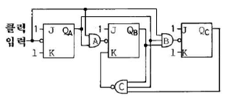
- 5진
- 6진
- 7진
- 8진
(정답률: 81%)
32. 속도 변환형 마이크로폰의 동작 원리를 에너지 변환 과정으로 나타내면?
- 음향에너지 → 위치에너지 → 전기에너지
- 음향에너지 → 운동에너지 → 전기에너지
- 음향에너지 → 위치에너지 → 운동에너지 → 전기에너지
- 음향에너지 → 운동에너지 → 위치에너지 → 전기에너지
(정답률: 71%)
33. 전기회로의 전압 V=8∠45°[V], 전류 I=4∠15°[A]이다. 이 회로의 임피던스 Z를 구하면?
- 1 + j√3
- 1 - j√3
- √3 + j
- √3 - j
(정답률: 59%)
34. 그림과 같은 회로에서 저항 R1에 흐르는 전류 I1은?
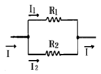
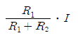
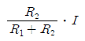
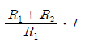
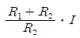
(정답률: 87%)
35. 내압이 1[kV]이고, 용량이 각각 0.1[μ F], 0.2[μ F], 0.4[μF]인 콘덴서를 직렬로 연결하면 전체내압[V]은?
- 285
- 1,750
- 3,500
- 7,000
(정답률: 65%)
36. 그림의 회로에서 출력 Vo는? (단, 연산증폭기는 이상적이라고 가정)
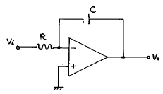
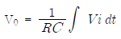
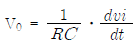
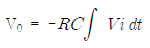
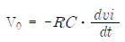
(정답률: 61%)
37. 전원회로에서 무부하시 출력단자 전압이 100[V]이고, 부하를 연결했을 때의 출력단자 전압이 80[V]이었다. 전압변동률은 몇 [%]인가?
- 15
- 20
- 25
- 30
(정답률: 83%)
38. 다음 회로의 출력전압 e0는?
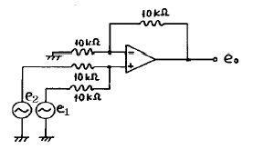
- -(e1+e2)
- e1-e2
- e2-e1
- e1+e2
(정답률: 70%)
39. 그림과 같은 회로에서 출력 발진주파수는 몇 [Hz]인가?
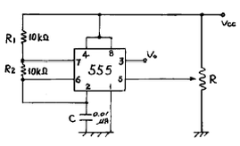
- 200
- 480
- 820
- 950
(정답률: 83%)
40. 다음과 같은 증폭기의 전압이득(Av)는?
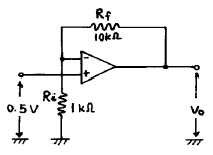
- 5
- 5.5
- 10
- 11
(정답률: 74%)
3과목: 임의구분
41. 짝수 패리티 비트를 이용하여 데이터를 전송할 때 데이터에 있는 몇 개의 착오(error)까지 검출할 수 있는가?
- 1
- 2
- 3
- 4
(정답률: 84%)
42. 기억장치가 read 신호를 받은 시간부터 읽은 데이터가 출력될 때까지의 시간은?
- 복원 시간
- 사이클 시간
- 액세스 시간
- 데이터 시간
(정답률: 92%)
43. TV에서 수신전계의 변동에 관계없이 검파 출력을 항상 일정하게 유지 시켜주는 회로는?
- AGC 회로
- ACC 회로
- APC 회로
- ABL 회로
(정답률: 76%)
44. 채터링(Chattering) 방지 회로로 쓰이는 것은?
- 래치 회로
- 시미트 트리거 회로
- 매트릭스 회로
- 멀티플렉서 회로
(정답률: 83%)
45. 교재나 학습용 프로그램을 바탕으로 하여 단말기를 통해 개인별로 대화형에 의한 학습 지도를 하는 교육 방식을 나타내는 용어는?
- CAE
- CAI
- CAD
- FAS
(정답률: 77%)
46. 물속에 있는 물체의 결함을 탐상하려고 한다. 알맞은 현미경은?
- 전자 현미경
- 광학 현미경
- 단색광 현미경
- 음향(초음파) 현미경
(정답률: 95%)
47. 수신기에서 희망하는 전파를 어느 정도까지 분리해 낼 수 있는지를 나타내는 것은?
- 충실도
- 선택도
- 안정도
- 감도
(정답률: 83%)
48. 고주파 가열은 어느 것을 이용한 것인가?
- 전장 또는 자장
- 줄 열
- 전자 빔
- 아크 열
(정답률: 97%)
49. FM 검파 회로에서 비(ratio) 검파 회로가 사용되는 주된 이유는?
- 진폭 제한 작용을 가지므로
- 출력 임피던스가 낮으므로
- 검파 출력 전압이 크므로
- 동조가 간단하므로
(정답률: 100%)
50. 2개 입력 A, B가 모두 0 또는 1일 경우 출력 F가 1인 논리 소자는?
- EX-NOR 회로
- NAND 회로
- NOR 회로
- EX-OR 회로
(정답률: 48%)
51. 논리회로를 간단히 하면?
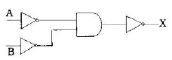
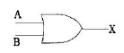
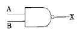
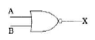
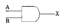
(정답률: 61%)
52. 스펙트럼 확산 변조의 장점으로 옳지 않은 것은?
- 다른 방식에 비해서 비화성을 유지할 수 있다.
- 혼신 방해에 대한 영향이 적다.
- S/N이 상당히 낮은 경우에도 광대역화 하는 것으로 통신이 가능하다.
- 송ㆍ수신기가 간단하다.
(정답률: 70%)
53. 송ㆍ수신기용 발진기의 조건으로 옳지 않은 것은?
- 주파수 안정도가 높을 것
- 전원전압, 온도 및 습도의 변화에 대하여 발진 출력이 일정할 것
- 고조파 발생이 클 것
- 주파수의 미세 조정이 쉬울 것
(정답률: 74%)
54. 송ㆍ수신기에서 주파수의 안정도와 다수의 채널이 필요한 경우에 널리 사용되는 발진기는?
- LC 발진기
- 수정발진기
- 콜피츠 발진기
- PLL 주파수 합성기
(정답률: 56%)
55. 어떤 측정법으로 동일 시료를 무한 횟수 측정하였을 때 데이터의 분포의 평균치와 참값과의 차를 무엇이라 하는가?
- 신뢰성
- 정확성
- 정밀도
- 오차
(정답률: 59%)
56. 예방보전의 기능에 해당하지 않는 것은?
- 취급되어야 할 대상설비의 결정
- 정비작업에서 점검시기의 결정
- 대상설비 점검개소의 결정
- 대상설비의 외주이용도 결정
(정답률: 85%)
57. 관리한계선을 구하는데 이항분포를 이용하여 관리선을 구하는 관리도는?
- Pn 관리도
- U 관리도
- X-R 관리도
- X 관리도
(정답률: 67%)
58. 로트(Lot)수를 가장 올바르게 정의한 것은?
- 1회 생산수량을 의미한다.
- 일정한 제조회수를 표시하는 개념이다.
- 생산목표량을 기계대수로 나눈 것이다.
- 생산목표량을 공정수로 나눈 것이다.
(정답률: 52%)
59. 다음의 데이터를 보고 편차 제곱합(S)을 구하면? (단, 소숫점 3자리까지 구하시오.)
- 0.338
- 1.029
- 0.114
- 1.014
(정답률: 80%)
60. 공정 도시기호 중 공정계열의 일부를 생략할 경우에 사용되는 보조 도시기호는?
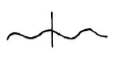
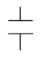
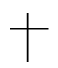
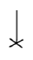
(정답률: 75%)